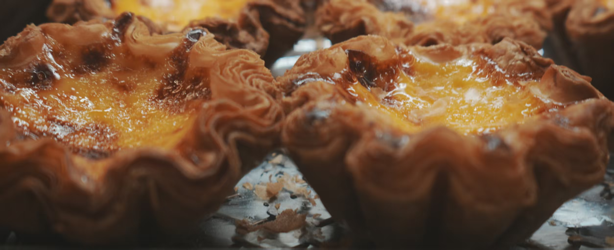

PIZZAMAIN TRACK · 70%
市售 Pizza 复刻清单
饼底、酱料、配料与家庭烘烤逐项测试。
CONTENT LIBRARY
70% 家庭烘焙、30% 自制饮品；烘焙内容中 Pizza 约 70%、吐司 25%、蛋挞与饼干等 5%。
饼底、酱料、配料与家庭烘烤逐项测试。

从目标口感、馅料和家庭烤箱记录开始。

看到喜欢的成品后，先记下想复刻的特征。
用当季水果、茶、牛奶和冰，建立清楚的比例记录。

从使用频率、空间、温差和主要品类出发做选择。
只整理 Pizza、吐司和其他实操中确实遇到、值得弄清的问题。
这个分类还没有内容。